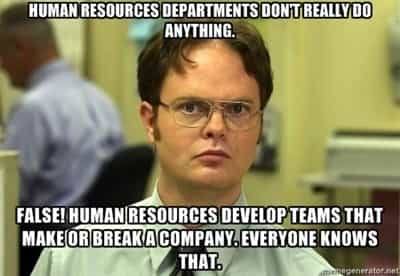

"You know, walk the earth, meet people... get into adventures."


Due to the infiltration of political correctness and diversity into most American job fields, it’s harder than ever for a man to get or hold a job. The last bastions of traditional meritocratic careers are the STEM fields, and they are that way simply because they’re hard and require more effort and intelligence than the average desk chair job. They’re a little more resistant to the spreading virus of “everyone’s equal and women more than most” that the PC crowd is pushing—but not for long.
I work in production engineering for the largest car company in the world, and, although the women-driven PC crap doesn’t fly back in Japan, the American operations branches of the company are about halfway zombified with it. Here are four ways that Human Resources and the PC culture are ruining the technical fields of America, and how to fight it.
When I interviewed for the job, I was interviewed by HR. The only technical things were to study a simple part and sketch from memory, then identify which part of a car was represented in a print. No questions about your aptitude, or whether you’re a gearhead or afraid to get your hands dirty.
HR can’t ask the right questions in an interview because they don’t know how much work, dirt, and sweat goes into keeping the plants running. No questions about technical problem-solving, mechanical skills, or work ethic are ever asked. When a loser does the hiring, you see a lot of losers getting hired.
The entry salaries are driven down to a level where top-tier people won’t apply for the jobs. When the co-ops who come to you for a term during their college end up going someplace more profitable, you know that “lean manufacturing” is not a term to apply to the salaries of your people that matter.
In an interview you should strike a balance between a “people person” who can communicate, and an “expert” who has the technical knowledge to actually do the job. Nerd engineers are out, but poseurs have never been in. You can never go wrong talking up your work ethic and desire to learn new things.
Know what you’re worth, and negotiate for it up front. The ONLY time you will have any say over your pay is at the hiring table, because, once you’re in, you’re playing by their rules. Engineers get pay raises by jumping companies; you can’t negotiate out of college because you have to get a job, but once you have a job already, hold out for what you’re worth at the offer stage; if they’re serious, they’ll play ball.
Because your skin color and vagina will help you design stuff that works.
There are more positions available in a corporation than just the technical ones. I live and work in the Midwest, and the cars are built by white, straight, Christian men, the machines are maintained by the same, and the equipment is sourced by engineers who are that also. This is seen as a problem by HR, which wants the overall demographics in the company to fit some arbitrary national standard, even if it means hiring all five or so black people that live in the area.
All the non-technical areas get stacked with women and minorities. Any job that doesn’t require intelligence or work ethic, and can be filled by anyone, gets filled by someone “of diversity.” When you’re slammed on a deadline for a project, you get to explain to someone who was just hired for their vagina why they are personally imperiling the chances of the plant actually running tomorrow and then watch them not give a shit because they can’t understand real work and never will.
It is also not enough to have your company represent the national demographic averages, but the management has to as well. This means that racial minorities, women, and the GLBBQ get promoted for irrelevant traits instead of their merit.
The key here is to get your contacts and know who is competent and who is isn’t. We have a lady in each plant location in our department, and each one of them controls the keys to the kingdom by knowing all the shortcuts. Likewise, your talented industrial maintenance guy, or fabricator, out on the plant floor will help you, as well as fellow engineers in other areas. Once you have found the competent people, help them with their issues in a fast and correct manner, and they will remember and return the favor. Be sure to thank them.
The solution for people that suck is to go around, over, or through them. Never use profanity or be at all inappropriate, but if they’re holding you up, pass it to your superiors or burn them down in a meeting. You are not the hammer, but sometimes you can select the rock to be pounded.

Now that rating on intelligence or skill is considered discrimination, people are evaluated on their “passion.” This causes “promotion of the loudest,” and means the people in charge are the ones that are the most worked up. Logical thought goes out the window and it’s replaced by the measure of your worth being how much you act like you care.
Caring about your job enough to work hard is great, but, if you’re not actually any good, your stuff won’t work no matter how much you cry. The real world is a meritocracy, and eventually in these jobs the narrative fails and shit gets real. This causes salaries to be re-balanced to be “fair,” and means that a glorified secretary can get paid the same as the engineers as they both hold the same job title (usually called something like “specialist.”
The solution for this area is to remain grounded in reality. Knowledge is still king, and you will learn more in thirty minutes on the shop floor than you will in eight hours of meetings. Avoid the meetings when you can, know more about the technical problems and the people out there actually dealing with them when you DO have to go to them, and you’ll be able to win. Sweat, dirt, and the shop uniform beats business casual any day of the week; you can tell someone’s worth by how beat up their boots are.

Grabbing boobs, or punching dudes; about the only way to get walked out.
Since passion has replaced performance, any actual performance reviews have to use such vague language like “commitment to company values.” This allows your supervisor to tweak your review based on his like or dislike of you, but it doesn’t really matter as they never fire anyone anymore for fear of lawsuits. This causes the work to be piled on the ones that can, and the ones that can’t are just sort of there.
About the only thing that can get you fired is violence, sexual harassment, flagrant inappropriate internet use, espionage or theft, or blatant intentional safety violations. They can, however, berate you till you quit, transfer you to shitty projects, or put you out on the road on business travel until your ears bleed, so keep that in mind.
Be able to account for your time, and always have something to print out for the boss. Your boss will often only ask for updates from you when he is asked for updates on his people; make him happy. A lot of people work hard at looking like they work hard; coming in early and leaving early is seen as more committed than coming in late and staying late, even if it is the same amount of time. Keep personal stuff off your desk, and take personal calls elsewhere.
If you don’t have enough to do, ask for more if you feel like it, and go out on the plant floor or some place away from the desk if you don’t. Perception is everything.
It’s a different world than it used to be, but being good at your job in these industries still trumps any diversity quota once you get hired. Once you cut through the layers of bullshit, you’ll find that the ones that are there at three in the morning on the last nights of the shutdowns making sure the place will run on Monday are the ones that matter.
If you’re one of them, or whatever equivalent your particular job field has instead, and if you can keep your mouth shut, you can still make it in these last few job fields still standing.